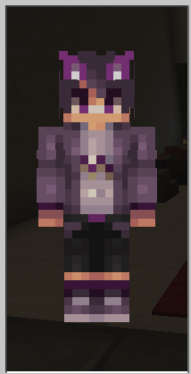

| プレイヤーのスキン | 詳細情報 |
|---|---|
| プレイヤーの名前: akki0606 執行期間：2021年4月6日～無期 処分の種類：永久ＢＡＮ ●理由 ・暴言（ぼうげん） 執行担当者: WiseTOMOHIRO |
|
| プレイヤーの名前: BenignNote40775 執行期間：2021年2月17日～無期 処分の種類：永久ＢＡＮ ●理由 ・荒らし ・他人の建築物の破壊 執行担当者: WiseTOMOHIRO |
|
| プレイヤーの名前: Creeper12PRO 執行期間：2021年5月11日～無期 処分の種類：永久ＢＡＮ ●理由 ・数回に及ぶ軽度な荒らし 執行担当者: WiseTOMOHIRO |
|
| プレイヤーの名前: CeasingOwl69749 執行期間：2021年5月16日～6月19日 処分の種類：永久ＢＡＮ ●理由 ・いらんことをした・うざい ・荒らしの疑い 執行担当者: WiseTOMOHIRO |
|
| プレイヤーの名前: CeasingOwl69749 執行期間：2021年7月21日～無期 処分の種類：永久ＢＡＮ（仮停止なし） ●理由 ・度重なる荒らし ・度重なる虚言（うそをついた） 執行担当者: WiseTOMOHIRO |
|
| プレイヤーの名前: Glitch3912 執行期間：2021年6月11日～無期 処分の種類：永久ＢＡＮ ●理由 ・荒らし 執行担当者: WiseTOMOHIRO |
|
| プレイヤーの名前: himesayu0102 執行期間：2021年4月26日～4月30日 処分の種類：ワールド立ち入り制限 ●理由 ・軽度な荒らし 執行担当者: WiseTOMOHIRO |
|
| プレイヤーの名前: hikia4079 執行期間：2021年5月11日～無期 処分の種類：ワールド立ち入り制限 ●理由 ・数回に及ぶ悪ふざけ 執行担当者: WiseTOMOHIRO |
|
| プレイヤーの名前: kirie0341 執行期間：2021年4月1日～無期 処分の種類：永久ＢＡＮ ●理由 ・荒らし ・他人の建築物の破壊 執行担当者: WiseTOMOHIRO |
|
| プレイヤーの名前: Qerusbyd 執行期間：2021年6月28日～無期 処分の種類：永久ＢＡＮ（仮停止なし） ●理由 ・荒らし 執行担当者: WiseTOMOHIRO |
|
 |
プレイヤーの名前: RYOYUKIMI 執行期間：2021年5月11日～無期 処分の種類：永久ＢＡＮ ●理由 ・数回に及ぶ暴言など 執行担当者: WiseTOMOHIRO |
| プレイヤーの名前: ugokunanasi3 執行期間：2021年4月1日～無期 処分の種類：永久ＢＡＮ ●理由 ・公然わいせつ 執行担当者: WiseTOMOHIRO |
|
| プレイヤーの名前: UnaskedLemur378 執行期間：2021年5月11日～無期 処分の種類：永久ＢＡＮ ●理由 ・数回に及ぶ軽度な荒らし 執行担当者: WiseTOMOHIRO |
|
|  | プレイヤーの名前: DarlingLynx596 執行期間：2021年8月19日～無期 処分の種類：永久ＢＡＮ ●理由 ・暴言 執行担当者: WiseTOMOHIRO |
| プレイヤーの名前: hello 8917043 執行期間：2021年8月19日～無期 処分の種類：永久ＢＡＮ ●理由 ・暴言 執行担当者: WiseTOMOHIRO |
|
.png) |
プレイヤーの名前: TK31493（としかみ） 執行期間：(執行終了） 処分の種類：有期ＢＡＮ ●理由 ・ワールドを重くするなどの行為 執行担当者: WiseTOMOHIRO |